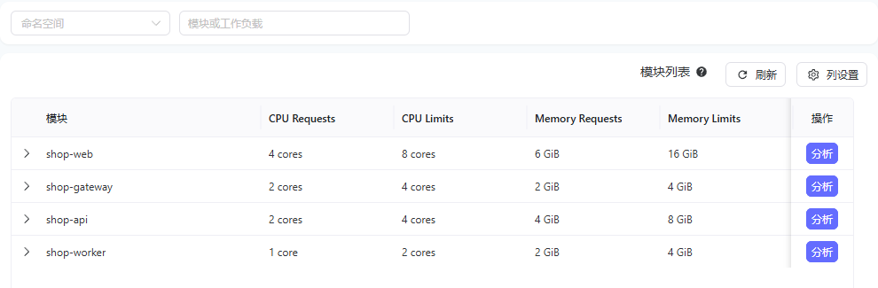
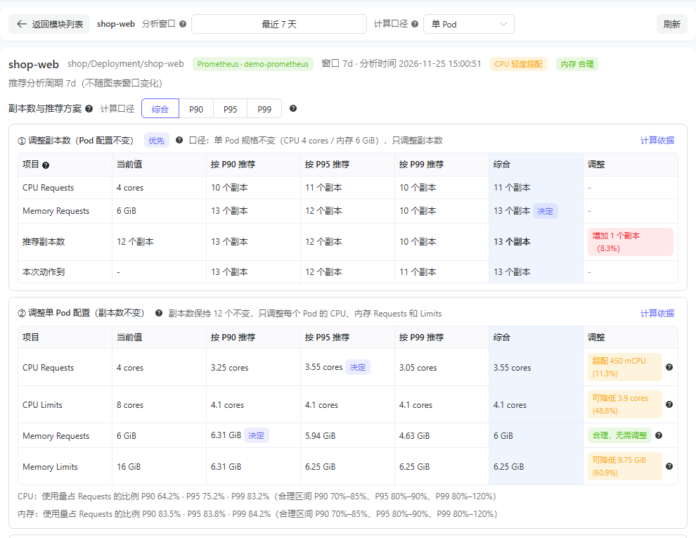
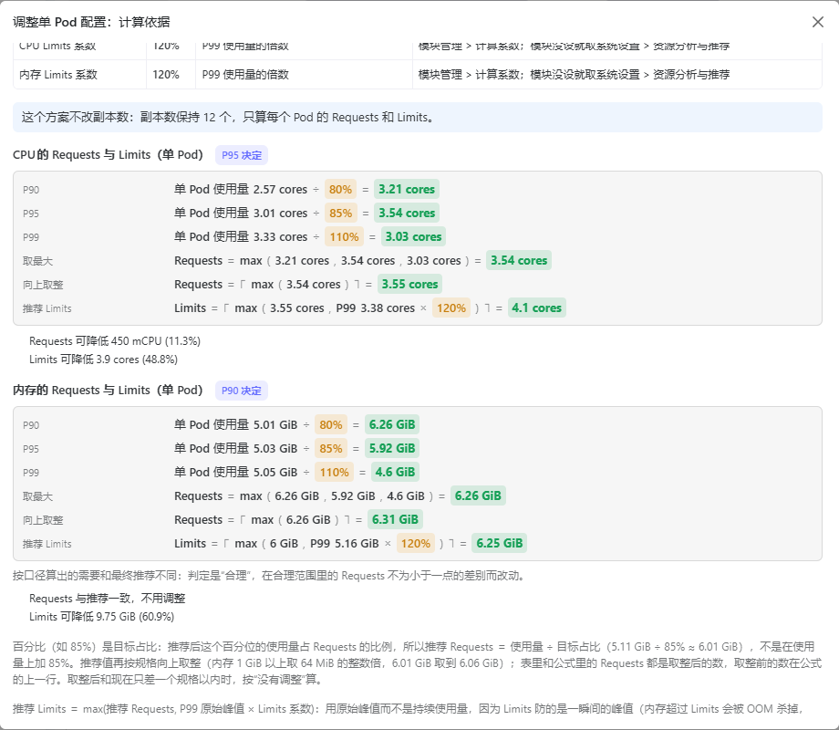
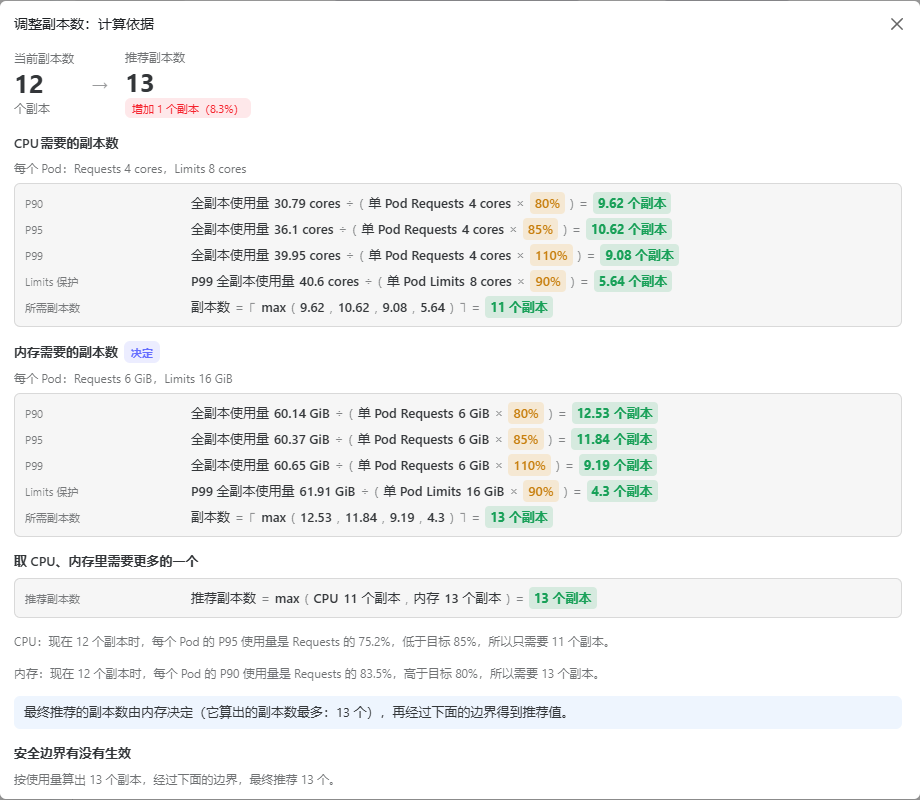
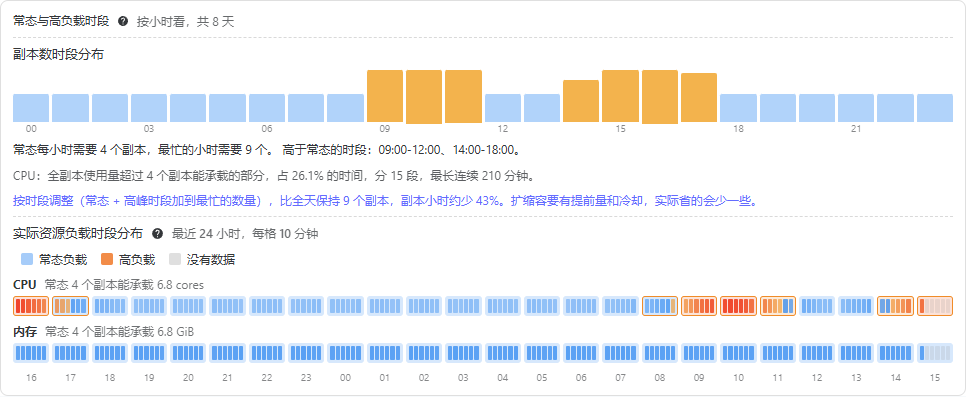
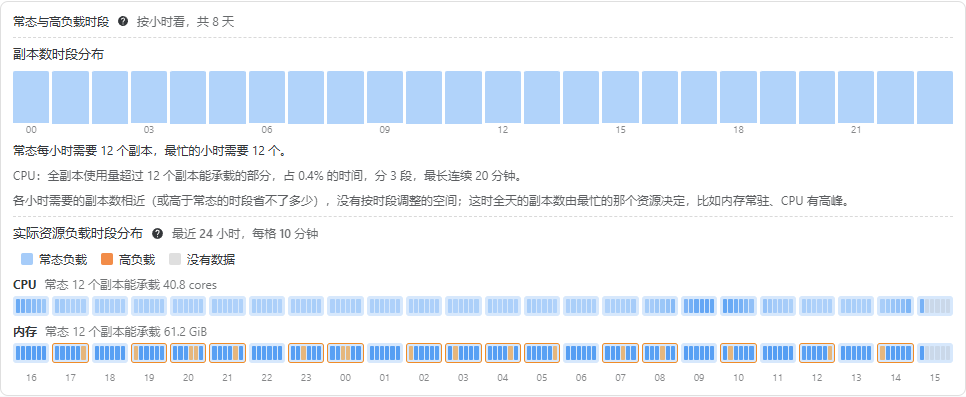
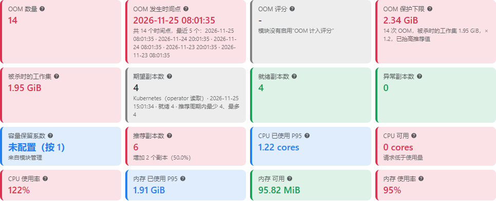
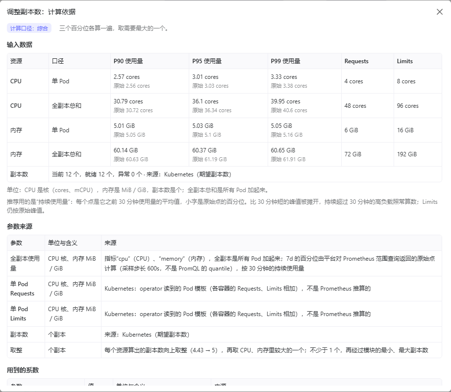
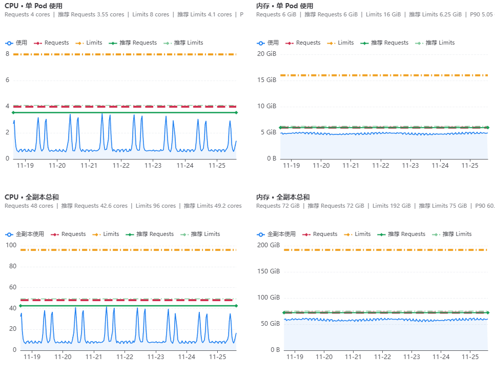

两级页面：先选模块，再看分析
在“预测结果 > 资源大盘”里按命名空间或关键词找到模块，进入“模块资源分析”。页面回答三件事：每个 Pod 的 CPU、内存现在用了多少；Requests 与 Limits 是否合适；副本数需要多少。集群级的节点、Pod 总量见集群大盘与 Operator 上报。
本页的图片取自用模拟数据搭建的演示环境（三个模块、一个模拟的 Prometheus 和 Operator 上报），数字只用来说明界面，不代表任何真实负载。

大盘是只读分析：不预测、不改配置，也不使用平台已存的样本。每个数字都由模块指标来源里写的 PromQL 当场向 Prometheus 查询，再由平台计算；某个指标超时或没有数据时，页面标出原因，其余部分照常显示。
使用量、当前配置、推荐值：三者分开
| 内容 | 来源 | 说明 |
|---|---|---|
| 使用量与 P90、P95、P99 | Prometheus | 实测，不会因 Requests、Limits 或任何系数改变。 |
| 单 Pod 当前 Requests、Limits | Kubernetes（Operator 上报的 Pod 模板，各容器相加） | 没有上报时，用 Prometheus 的总量推算并标“推算”：取最近 6 小时总量的中位数除以同期副本数的中位数，发布期间新旧 Pod 并存的数不会进入中位数。推算不是 Pod Spec，上报后以 Pod Spec 为准。 |
| 当前副本数 | Kubernetes 的 spec.replicas | 没有上报时用 Prometheus 的副本数指标；发布期间的突增（新旧 Pod 并存）不当作副本数。 |
| 全副本 Requests、Limits | 单 Pod 的值 × 当前副本数 | 例如 12 个副本、单 Pod 内存 Limits 16 GiB，全副本就是 192 GiB。 |
| 推荐值 | 平台按下面的算法计算 | 每个推荐值都能在“计算依据”里看到来源、单位、系数和取整。 |
P90、P95、P99 怎么算
百分位由平台对 Prometheus 范围查询返回的原始点计算，不是 PromQL 的 quantile；采样步长写在“计算依据”的来源表里。统计范围是“推荐分析周期”（系统参数，默认 7 天，可选 1、7、15、30 天），不随图表窗口变化。
推荐 Requests 与副本数用的是持续使用量：每个点是它之前 N 分钟使用量的平均值，N 默认 30 分钟（系统参数 analysis.rec_sustain_minutes，模块可在计算系数里设自己的值，0 表示按原始点）。比窗口短的峰值被摊开，不会抬高长期配置；持续超过窗口的高负载仍然完整算数。例如 2 核的使用里夹着 100 个零散的 4 核点，持续使用量的 P99 约 2.3 核；如果这 100 个点是连续的，P99 仍是 4 核。Limits 防的是一瞬间的峰值，所以仍按原始 P99。
依据里，持续使用量是大字，原始百分位是小字；还会给出使用量超过推荐 Requests 的时间占比、分几段、最长连续多少分钟。
两种调整办法，分开算、分开列
- ① 调整副本数（Pod 配置不变）：每个 Pod 的 Requests 不变，算需要几个副本。优先建议：它不改 Pod 配置，负载自己重新分摊。
- ② 调整单 Pod 配置（副本数不变）：副本数保持现在的，推荐每个 Pod 的 CPU、内存 Requests 和 Limits。只有副本数调不动时才建议改它。
两张表各有一列“当前值”、三个百分位列（按 P90、P95、P99 推荐）和“综合”。列里的数字是按该百分位推荐的结果，不是实测使用量；实测的百分位在页面下方的使用量表和折线图里。方案①里的 CPU Requests、Memory Requests 都是单 Pod 口径，表头旁的“?”有说明。

方案②：单 Pod 的 Requests 与 Limits

- 三个百分位的持续使用量，各除以自己的目标占比（默认 P90 80%、P95 85%、P99 110%），取最大的一个。
- 如果模块设了 Requests 余量，再乘 (1 + 余量)。
- 按规格向上取整：CPU 1 核以上取 50 mCPU 的整数倍，内存 1 GiB 以上取 64 MiB 的整数倍。
- 推荐 Limits = max(推荐 Requests, 原始 P99 × Limits 系数)，系数默认 120%（即 P99 × 1.2）。
目标占比是推荐后这个百分位的使用量占 Requests 的比例，不是在使用量上再加百分之几：P95 为 5.11 GiB、目标 85%，推荐 Requests 是 5.11 ÷ 0.85 ≈ 6.01 GiB，取整后 6.06 GiB。表里和公式里的 Requests 都是取整后的数，取整前的数在公式的上一行。取整后与现在只差一个规格以内（CPU 50 mCPU、内存 64 MiB）时，按“没有调整”处理。
状态按三个百分位占 Requests 的比例落在哪里判断：默认 P90 合理区间 70%–85%、P95 80%–90%、P99 80%–120%；低于下限为超配（占比超过 50% 严重，30% 以上中度，其余轻度），高于上限为欠配；平时很低、只有 P99 偶尔高的，判合理，不据此下调。区间和分级都是系统参数。
Limits 与 Requests 的对应关系写在依据里：现在的 Limits 是 Requests 的几倍、推荐的是几倍；推荐 Limits 不会低于推荐 Requests。“可降低”的量就是现在的 Limits 减去推荐值。
方案①：推荐副本数

- 每个百分位：全副本使用量 ÷ (单 Pod Requests × 目标占比)，CPU、内存分别算。
- 每个资源向上取整，取三个百分位里最大的；再取 CPU 与内存中较大的一个，至少 1 个。
- Limits 保护：P99 全副本使用量 ÷ (单 Pod Limits × 峰值占比上限)，默认 90%，保证副本不会被减到让峰值顶到 Limits。
- 经过模块的最小、最大副本数。窗口内有 OOM 或 CPU 被限流时，使用量低估了需求，不减副本。
推荐副本数就是上面的结果，不含调整节奏。模块设了“单次最多增减 N 个”时，另有一行本次动作到：例如推荐 9 个、现在 12 个、单次最多减 1 个，本次动作到 11 个，要 3 次到位。两行不混在一起，依据里有说明。
使用量不高，为什么还要这么多副本
看哪个资源在决定副本数。依据里每个资源有一行：现在 N 个副本时，每个 Pod 的使用量占 Requests 的多少，目标是多少。例如内存 P95 全副本 60.71 GiB，单 Pod Requests 6 GiB、目标 85%：60.71 ÷ (6 × 0.85) ≈ 11.9，取整 12。每个 Pod 的 P95 是 5.11 GiB，占 Requests 的 85.2%，已经在目标上；内存总量不随副本数缩小，副本少了每个 Pod 就要多承担，超过目标。此时即使 CPU 只需 9 到 11 个，全天的副本数仍由内存决定。
要更少的副本，要提高单 Pod 内存 Requests（方案②，总量不变、Pod 变大）或降低目标占比，并评估 OOM 风险。
OOM、限流与保护
- OOM 评分 = 100 × (1 − 次数 × 权重)，只用于预测算法的内存评分、影响平台跟随哪个算法，不改大盘的推荐值。
- OOM 保护下限才改推荐：窗口内有 OOM 时，内存 Requests 不低于 max(被杀时的工作集 × OOM 保护系数, 现在的 Requests)，并且不减副本。卡片和依据里写出次数、工作集、系数和是否抬高了推荐。
- CPU 限流超过界限（系统参数，默认 5% 的时间）时，使用量低估了需求，不判超配、不降配置、不减副本。
常态与高负载时段


只看 P95 容易把每天只有几个小时的高负载摊到全天。这一块把全副本的持续使用量按一天里的小时分开（用模块的时区）：每个小时取所有天的 P95，除以单 Pod Requests 和目标占比，向上取整，得到这个小时需要的副本数。24 个小时居中的那个是常态，最大的是最忙，高于常态的小时是高峰时段，并估算按时段调整比全天保持最忙的副本数少多少副本小时。各小时相近时，页面直说没有按时段调整的空间（例如内存常驻时，内存决定全天的副本数）。
下方“实际资源负载时段分布”给出最近 24 小时：24 个大方块，每个按 5 或 10 分钟分格，CPU、内存各一行。格里是这段时间全副本使用量的平均值，颜色看它占“常态副本数能承载的量”的比例：蓝色是常态负载（越深越接近上限），橙到红是高负载，灰色是没有数据；大方块的底色是这个小时各格的平均，有高负载格的小时边框为橙色。鼠标放上去显示时间、使用量和占比。
按时段调整是在模块里设“时间周期”（见决策方式与策略），大盘只估算，不自动生成。格的大小受指标查询步长限制：步长不粗于 10 分钟时是 5 或 10 分钟，更粗时就是该步长。窗口不足 2 天、没有全副本使用量时不显示这一块。

计算依据窗口
每个方案的“计算依据”给出：输入数据表（单 Pod 与全副本两个口径的 P90、P95、P99 使用量、Requests、Limits、副本数及来源）、参数来源表（每个符号的指标名、单位、窗口、是否持续处理）、取整规则、取最大的规则、调整节奏、Limits 与 Requests 的倍数、超过推荐值的时间占比，以及 OOM 保护。所有系数都来自模块管理（模块没设的跟随系统设置），见模块配置说明。

折线图怎么读
CPU、内存各一张，可切换单 Pod 与全副本：蓝色是使用量，红色 Requests、橙色 Limits（两者同样粗细），绿色是推荐 Requests、浅绿是推荐 Limits，虚线是 P90、P95、P99。两条线重合时（比如推荐值等于现在的 Requests）按条纹叠画，各露出一边。

AI 分析与邮件
右下角的 AI 助手只在点“AI 分析”后才开始：用平台的语言模型，基于这些实测数据独立分析，写出自己的推荐配置和副本数，并说明与平台推荐的差异；打开页面或助手窗口不会触发，也不会保留上一次的结果，更不会改任何配置。
结果可以邮件发给当前登录用户。邮件主题是“集群 · 命名空间/模块 · 分析周期”，正文最前面是三张表：模块与工作负载（集群、命名空间、模块、工作负载、Pod 数、数据源）、Pod 明细（名称、节点、阶段、就绪、重启）、模块近期运行情况（副本数、CPU 与内存使用及判断、OOM、限流），然后才是副本方案与配置对比，保证邮件对应到具体模块。集群名与 Pod 名来自 Operator 上报；没有上报时，集群写数据源名并注明，Pod 写“没有 Pod 信息”。发信需要先配置邮件（SMTP）。
使用边界
- 要看到准确的 Pod Requests、Limits、副本数、集群名和 Pod 名，需要 Operator 上报；没有上报时是推算，页面会标明。
- Operator 只用模拟客户端测试过，没有在真实集群验证；大盘的算法用合成数据与模拟 Prometheus 验证，窗口默认值（30 分钟持续窗口、7 天分析周期）需要按各模块的负载调整。
- 方案是建议。写入由模块的运行模式、全局开关和 Operator 共同授权，见准入与伸缩。